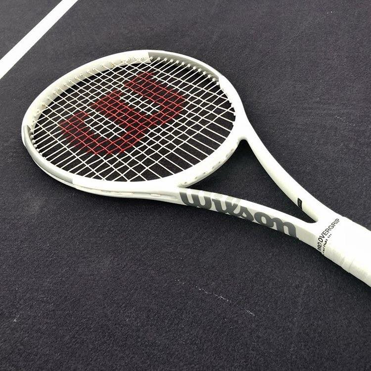

|  |
|---|
| RSE-011 |
RSE-011 is a standard white and silver Wilson One brand tennis racket. RSE-011 is in good condition, aside from three notable breaks in the netting of the head. RSE-011 was discovered and captured on January 3rd, 2009, after a year-long scandal in which professional player Rafael Nadal had a 150% increase in consistency with his hits and began to win every single match he participated in, including the 2008 Beijing Summer Olympics.
RSE-011 grants its holder the ability to never lose a match of tennis, alongside a significant increase in speed and accuracy. Users with no prior tennis playing experience who use RSE-011 in a match against a highly skilled player using a traditional tennis racket will win the match, including an exceptional point ratio against their opponent.
RSE-011 is held within the Anomalous Objects Hall of Location 03. It is securely locked up to prevent infliction of any further damage. However, RSE-011 is occasionally rented out to trusted personnel for use on the on-site tennis court for experimenting or recreational purposes.